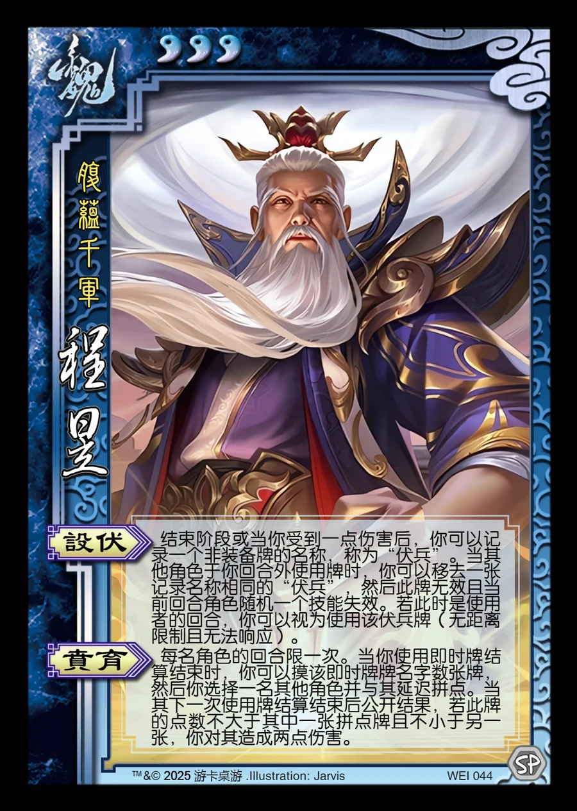

点击卡面查看大图
魏
程昱
♥3腹蕴千军
设伏
结束阶段或当你受到一点伤害后，你可以记录一个非装备牌的名称，称为“伏兵”。当其他角色于你回合外使用牌时，你可以移去一张记录名称相同的“伏兵”，然后此牌无效且当前回合角色随机一个技能失效。若此时是使用者的回合，你可以视为使用该伏兵牌（无距离限制且无法响应）。
贲育
每名角色的回合限一次。当你使用即时牌结算结束时，你可以摸该即时牌牌名字数张牌，然后你选择一名其他角色并与其延迟拼点。当其下一次使用牌结算结束后公开结果，若此牌的点数不大于其中一张拼点牌且不小于另一张，你对其造成两点伤害。